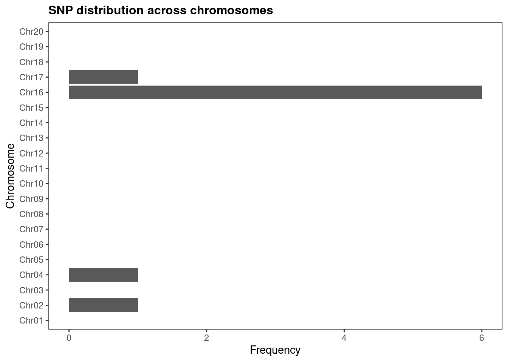
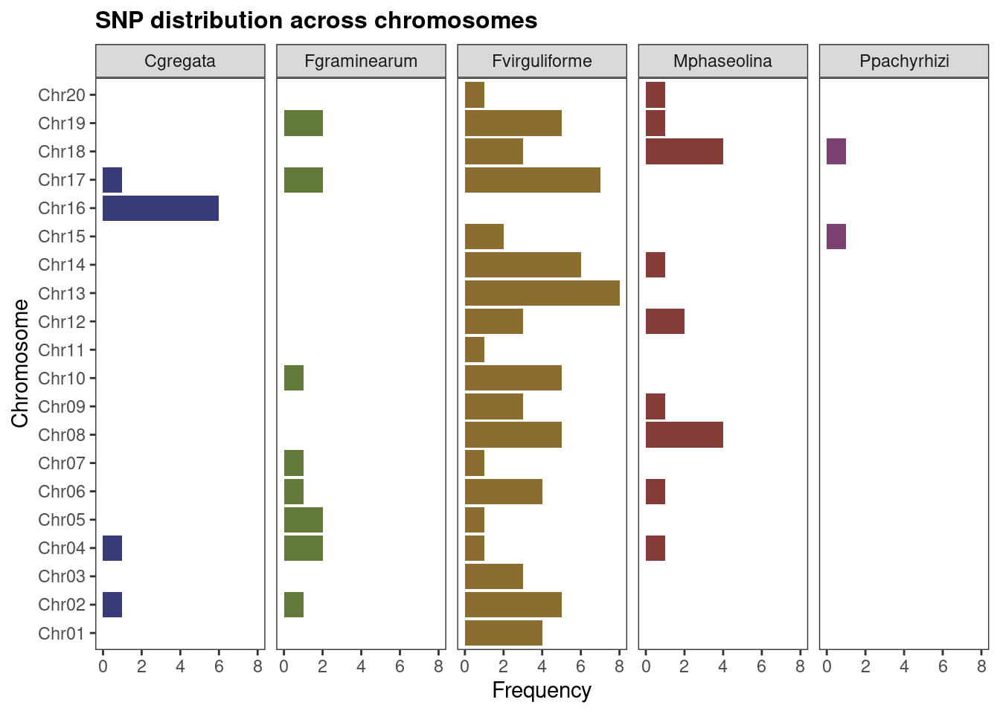
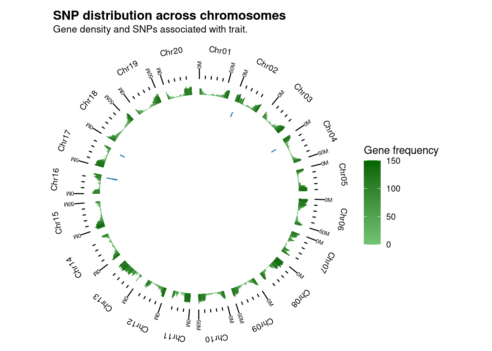
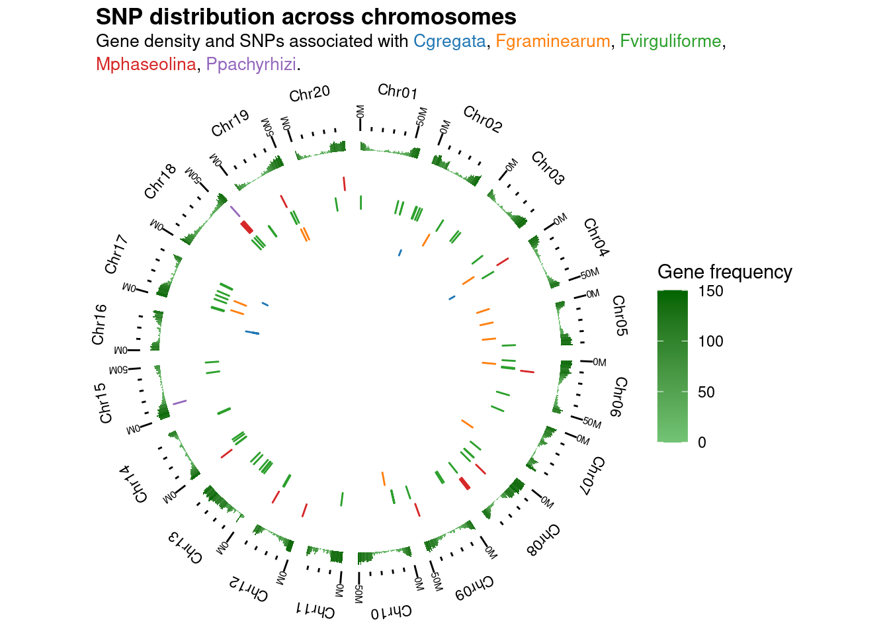
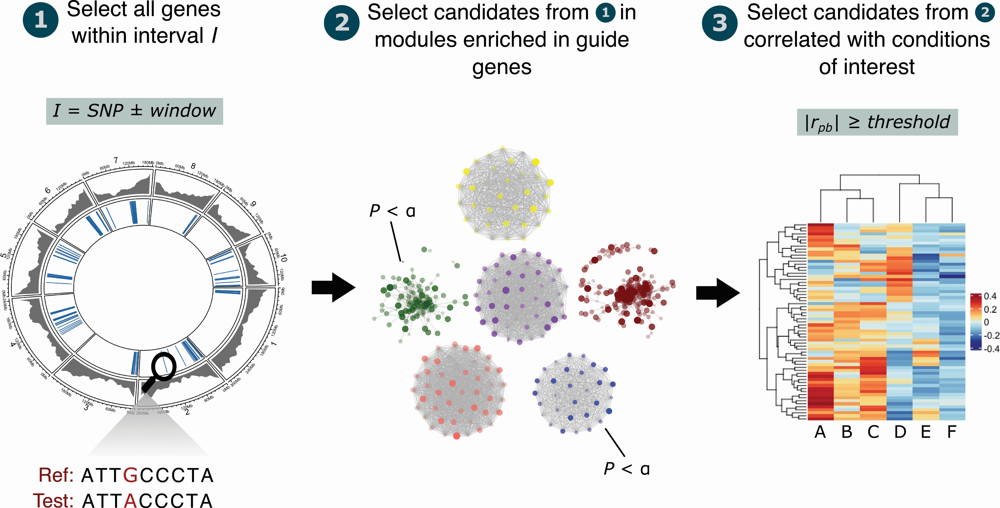

set.seed(123) # for reproducibility
# Load required packages
library(SummarizedExperiment)
library(GenomicRanges)
library(cageminer)
library(here)3 Network-based data integration for gene discovery
In this lesson, you will learn how to use networks to integrate data and prioritize genes associated with traits of interest. At the end of the lesson, you will be able to:
- work with
GRangesobjects - integrate GWAS-derived SNPs with coexpression networks to trait-related genes
Let’s start by loading the packages we will use.
3.1 Getting to know the example data
In this chapter, we will use data from Almeida-Silva and Venancio (2021), available in the data/ directory of the GitHub repo associated with this course. The data set comprises:
- GWAS-derived SNPs associated with soybean resistance to multiple phytopathogenic fungi.
- RNA-seq data of soybean response to multiple phytopathogenic fungi.
Our goal here is to prioritize candidate genes associated with resistance to fungal diseases.
The expression data are available in a SummarizedExperiment object, which by now should be a familiar data class to you.
# Load expression data
load(here("data", "se_soyfungi.rda"))
# Take a look at the object
se_soyfungiclass: SummarizedExperiment
dim: 20272 127
metadata(0):
assays(1): ''
rownames(20272): Glyma.01G000100 Glyma.01G000137 ... Glyma.U032705
Glyma.U039400
rowData names(0):
colnames(127): SAMD00117549 SAMD00117550 ... SAMN13743072 SAMN13743073
colData names(4): Pathogen Treatment Tissue Pathogen_TreatmentcolData(se_soyfungi)DataFrame with 127 rows and 4 columns
Pathogen Treatment Tissue
<character> <character> <character>
SAMD00117549 Ppachyrhizi control_res_24h leaves
SAMD00117550 Ppachyrhizi stress_res_24h leaves
SAMD00117552 Ppachyrhizi stress_res_24h leaves
SAMD00117551 Ppachyrhizi stress_res_24h leaves
SAMD00117541 Ppachyrhizi control_sus_24h leaves
... ... ... ...
SAMN13743069 Foxysporum stress root
SAMN13743070 Foxysporum stress root
SAMN13743071 Foxysporum_Fmosseae stress root
SAMN13743072 Foxysporum_Fmosseae stress root
SAMN13743073 Foxysporum_Fmosseae stress root
Pathogen_Treatment
<character>
SAMD00117549 Ppachyrhizi_control_..
SAMD00117550 Ppachyrhizi_stress_r..
SAMD00117552 Ppachyrhizi_stress_r..
SAMD00117551 Ppachyrhizi_stress_r..
SAMD00117541 Ppachyrhizi_control_..
... ...
SAMN13743069 Foxysporum_stress
SAMN13743070 Foxysporum_stress
SAMN13743071 Foxysporum_Fmosseae_..
SAMN13743072 Foxysporum_Fmosseae_..
SAMN13743073 Foxysporum_Fmosseae_..We will also need an object containing information on the genomic coordinates of all genes in the soybean genome. If you have some experience with genomic data analyses, you probably know that this kind of information is usually stored in GFF3/GTF files. In Bioconductor, the standard data class to store genomic coordinates is called GRanges. You can create GRanges objects manually or directly from GFF3/GTF files using the import() function from the rtracklayer package. Let’s demonstrate how this works by reading a GFF3 file with soybean gene ranges onto a GRanges object:
# Load GFF3 file into the R session as a `GRanges` object
gma_ranges <- rtracklayer::import(
here("data", "gma_primary_transcripts.gff3.gz")
)
gma_rangesGRanges object with 791305 ranges and 16 metadata columns:
seqnames ranges strand | source type
<Rle> <IRanges> <Rle> | <factor> <factor>
[1] Chr01 27355-28320 - | JGI Wm82.a2.v1 gene
[2] Chr01 27355-28320 - | JGI Wm82.a2.v1 mRNA
[3] Chr01 27355-27824 - | JGI Wm82.a2.v1 exon
[4] Chr01 27355-27655 - | JGI Wm82.a2.v1 three_prime_UTR
[5] Chr01 27656-27824 - | JGI Wm82.a2.v1 CDS
... ... ... ... . ... ...
[791301] scaffold_99 27528-27561 - | JGI Wm82.a2.v1 CDS
[791302] scaffold_99 27574-28051 - | JGI Wm82.a2.v1 exon
[791303] scaffold_99 27574-28051 - | JGI Wm82.a2.v1 CDS
[791304] scaffold_99 29024-29105 - | JGI Wm82.a2.v1 exon
[791305] scaffold_99 29024-29105 - | JGI Wm82.a2.v1 CDS
score phase ID pacid
<numeric> <integer> <character> <character>
[1] NA <NA> Glyma.01G000100 30544134
[2] NA <NA> Glyma.01G000100.1 <NA>
[3] NA <NA> Glyma.01G000100.1:ex.. <NA>
[4] NA <NA> Glyma.01G000100.1:th.. <NA>
[5] NA 1 Glyma.01G000100.1:CDS <NA>
... ... ... ... ...
[791301] NA 1 Glyma.U045500.1:CDS <NA>
[791302] NA <NA> Glyma.U045500.1:exon:5 <NA>
[791303] NA 2 Glyma.U045500.1:CDS <NA>
[791304] NA <NA> Glyma.U045500.1:exon:6 <NA>
[791305] NA 0 Glyma.U045500.1:CDS <NA>
pid id alias
<character> <character> <character>
[1] Glyma.01G000100.1.p Glyma.01G000100.Wm82.. Glyma01g00210
[2] <NA> <NA> <NA>
[3] <NA> <NA> <NA>
[4] <NA> <NA> <NA>
[5] <NA> <NA> <NA>
... ... ... ...
[791301] <NA> <NA> <NA>
[791302] <NA> <NA> <NA>
[791303] <NA> <NA> <NA>
[791304] <NA> <NA> <NA>
[791305] <NA> <NA> <NA>
tid old_id Name gene_id
<character> <character> <character> <character>
[1] Glyma.01G000100.1.Wm.. Glyma01g00210 Glyma.01G000100 Glyma.01G000100
[2] <NA> <NA> Glyma.01G000100 Glyma.01G000100
[3] <NA> <NA> Glyma.01G000100 Glyma.01G000100
[4] <NA> <NA> Glyma.01G000100 Glyma.01G000100
[5] <NA> <NA> Glyma.01G000100 Glyma.01G000100
... ... ... ... ...
[791301] <NA> <NA> Glyma.U045500 Glyma.U045500
[791302] <NA> <NA> Glyma.U045500 Glyma.U045500
[791303] <NA> <NA> Glyma.U045500 Glyma.U045500
[791304] <NA> <NA> Glyma.U045500 Glyma.U045500
[791305] <NA> <NA> Glyma.U045500 Glyma.U045500
Parent old_tid UniProtKB
<CharacterList> <character> <CharacterList>
[1] <NA>
[2] Glyma.01G000100 <NA>
[3] Glyma.01G000100.1 <NA>
[4] Glyma.01G000100.1 <NA>
[5] Glyma.01G000100.1 <NA>
... ... ... ...
[791301] Glyma.U045500.1 <NA>
[791302] Glyma.U045500.1 <NA>
[791303] Glyma.U045500.1 <NA>
[791304] Glyma.U045500.1 <NA>
[791305] Glyma.U045500.1 <NA>
-------
seqinfo: 147 sequences from an unspecified genome; no seqlengthsThe first three columns of a GRanges object are mandatory, and they indicate the chromosome name, the ranges (i.e., start and end positions of a particular genomic element), and the strand where the element is. All other columns are called annotations, and they are optional. To demonstrate how to interpret GRanges object, let’s take a closer look at the first element.
# Subset the first element of the `GRanges` object
gma_ranges[1]GRanges object with 1 range and 16 metadata columns:
seqnames ranges strand | source type score phase
<Rle> <IRanges> <Rle> | <factor> <factor> <numeric> <integer>
[1] Chr01 27355-28320 - | JGI Wm82.a2.v1 gene NA <NA>
ID pacid pid id
<character> <character> <character> <character>
[1] Glyma.01G000100 30544134 Glyma.01G000100.1.p Glyma.01G000100.Wm82..
alias tid old_id Name
<character> <character> <character> <character>
[1] Glyma01g00210 Glyma.01G000100.1.Wm.. Glyma01g00210 Glyma.01G000100
gene_id Parent old_tid UniProtKB
<character> <CharacterList> <character> <CharacterList>
[1] Glyma.01G000100 <NA>
-------
seqinfo: 147 sequences from an unspecified genome; no seqlengthsBy looking at the first element, we can see that it represents a gene located in chromosome Chr01, from position 27355 to position 28320, and with ID gma_ranges$gene_id[1].
Importantly, to extract data for the first 3 variables, you will use the special functions seqnames(), ranges() (or start() and end()), and strand(). However, extracting information on the range annotations can be done with the $ operator, as you would do for a data frame. You can also use the function mcols() to extract only range annotations.
# Extract seqnames (chromosome names)
head(seqnames(gma_ranges))factor-Rle of length 6 with 1 run
Lengths: 6
Values : Chr01
Levels(147): Chr01 Chr02 Chr03 Chr04 ... scaffold_93 scaffold_97 scaffold_99# Extract start and end positions
## Option 1: ranges()
head(ranges(gma_ranges))IRanges object with 6 ranges and 0 metadata columns:
start end width
<integer> <integer> <integer>
[1] 27355 28320 966
[2] 27355 28320 966
[3] 27355 27824 470
[4] 27355 27655 301
[5] 27656 27824 169
[6] 27926 27991 66## Option 2: start() and end()
head(start(gma_ranges))[1] 27355 27355 27355 27355 27656 27926head(end(gma_ranges))[1] 28320 28320 27824 27655 27824 27991# Extract all range annotations
head(mcols(gma_ranges))DataFrame with 6 rows and 16 columns
source type score phase ID
<factor> <factor> <numeric> <integer> <character>
1 JGI Wm82.a2.v1 gene NA NA Glyma.01G000100
2 JGI Wm82.a2.v1 mRNA NA NA Glyma.01G000100.1
3 JGI Wm82.a2.v1 exon NA NA Glyma.01G000100.1:ex..
4 JGI Wm82.a2.v1 three_prime_UTR NA NA Glyma.01G000100.1:th..
5 JGI Wm82.a2.v1 CDS NA 1 Glyma.01G000100.1:CDS
6 JGI Wm82.a2.v1 exon NA NA Glyma.01G000100.1:ex..
pacid pid id alias
<character> <character> <character> <character>
1 30544134 Glyma.01G000100.1.p Glyma.01G000100.Wm82.. Glyma01g00210
2 NA NA NA NA
3 NA NA NA NA
4 NA NA NA NA
5 NA NA NA NA
6 NA NA NA NA
tid old_id Name gene_id
<character> <character> <character> <character>
1 Glyma.01G000100.1.Wm.. Glyma01g00210 Glyma.01G000100 Glyma.01G000100
2 NA NA Glyma.01G000100 Glyma.01G000100
3 NA NA Glyma.01G000100 Glyma.01G000100
4 NA NA Glyma.01G000100 Glyma.01G000100
5 NA NA Glyma.01G000100 Glyma.01G000100
6 NA NA Glyma.01G000100 Glyma.01G000100
Parent old_tid UniProtKB
<CharacterList> <character> <CharacterList>
1 NA
2 Glyma.01G000100 NA
3 Glyma.01G000100.1 NA
4 Glyma.01G000100.1 NA
5 Glyma.01G000100.1 NA
6 Glyma.01G000100.1 NA # Extract a specific column
head(gma_ranges$type)[1] gene mRNA exon three_prime_UTR
[5] CDS exon
Levels: gene mRNA exon three_prime_UTR CDS five_prime_UTRFinally, you can subset GRanges object using the same syntax to subset vectors. For example, to extract only ranges for genes, you’d do:
# Extract only gene ranges
gene_ranges <- gma_ranges[gma_ranges$type == "gene"]
gene_rangesGRanges object with 56044 ranges and 16 metadata columns:
seqnames ranges strand | source type score
<Rle> <IRanges> <Rle> | <factor> <factor> <numeric>
[1] Chr01 27355-28320 - | JGI Wm82.a2.v1 gene NA
[2] Chr01 58975-67527 - | JGI Wm82.a2.v1 gene NA
[3] Chr01 67770-69968 + | JGI Wm82.a2.v1 gene NA
[4] Chr01 90289-91197 + | JGI Wm82.a2.v1 gene NA
[5] Chr01 90152-95947 - | JGI Wm82.a2.v1 gene NA
... ... ... ... . ... ... ...
[56040] scaffold_97 38235-38465 - | JGI Wm82.a2.v1 gene NA
[56041] scaffold_97 58787-59891 + | JGI Wm82.a2.v1 gene NA
[56042] scaffold_99 13436-13814 + | JGI Wm82.a2.v1 gene NA
[56043] scaffold_99 22294-25413 - | JGI Wm82.a2.v1 gene NA
[56044] scaffold_99 25903-29105 - | JGI Wm82.a2.v1 gene NA
phase ID pacid pid
<integer> <character> <character> <character>
[1] <NA> Glyma.01G000100 30544134 Glyma.01G000100.1.p
[2] <NA> Glyma.01G000200 30543475 Glyma.01G000200.1.p
[3] <NA> Glyma.01G000300 30545121 Glyma.01G000300.1.p
[4] <NA> Glyma.01G000500 30543768 Glyma.01G000500.1.p
[5] <NA> Glyma.01G000400 30542514 Glyma.01G000400.1.p
... ... ... ... ...
[56040] <NA> Glyma.U045100 30487127 Glyma.U045100.1.p
[56041] <NA> Glyma.U045200 30487126 Glyma.U045200.1.p
[56042] <NA> Glyma.U045300 30523589 Glyma.U045300.1.p
[56043] <NA> Glyma.U045400 30523588 Glyma.U045400.1.p
[56044] <NA> Glyma.U045500 30523590 Glyma.U045500.1.p
id alias tid
<character> <character> <character>
[1] Glyma.01G000100.Wm82.. Glyma01g00210 Glyma.01G000100.1.Wm..
[2] Glyma.01G000200.Wm82.. <NA> Glyma.01G000200.1.Wm..
[3] Glyma.01G000300.Wm82.. <NA> Glyma.01G000300.1.Wm..
[4] Glyma.01G000500.Wm82.. <NA> Glyma.01G000500.1.Wm..
[5] Glyma.01G000400.Wm82.. Glyma01g00300 Glyma.01G000400.1.Wm..
... ... ... ...
[56040] Glyma.U045100.Wm82.a.. <NA> Glyma.U045100.1.Wm82..
[56041] Glyma.U045200.Wm82.a.. Glyma0101s00210 Glyma.U045200.1.Wm82..
[56042] Glyma.U045300.Wm82.a.. <NA> Glyma.U045300.1.Wm82..
[56043] Glyma.U045400.Wm82.a.. <NA> Glyma.U045400.1.Wm82..
[56044] Glyma.U045500.Wm82.a.. <NA> Glyma.U045500.1.Wm82..
old_id Name gene_id Parent
<character> <character> <character> <CharacterList>
[1] Glyma01g00210 Glyma.01G000100 Glyma.01G000100
[2] <NA> Glyma.01G000200 Glyma.01G000200
[3] <NA> Glyma.01G000300 Glyma.01G000300
[4] <NA> Glyma.01G000500 Glyma.01G000500
[5] Glyma01g00300 Glyma.01G000400 Glyma.01G000400
... ... ... ... ...
[56040] <NA> Glyma.U045100 Glyma.U045100
[56041] Glyma0101s00210 Glyma.U045200 Glyma.U045200
[56042] <NA> Glyma.U045300 Glyma.U045300
[56043] <NA> Glyma.U045400 Glyma.U045400
[56044] <NA> Glyma.U045500 Glyma.U045500
old_tid UniProtKB
<character> <CharacterList>
[1] <NA>
[2] <NA>
[3] <NA>
[4] <NA>
[5] Glyma01g00300.1
... ... ...
[56040] <NA>
[56041] Glyma0101s00210.2
[56042] <NA>
[56043] <NA>
[56044] <NA>
-------
seqinfo: 147 sequences from an unspecified genome; no seqlengths
Practice
Explore the GRanges object created from the GFF3 file to answer the following questions:
- How many ranges represent genes and CDS, respectively?
- How many chromosomes are there?
- Which chromosome has the greatest number of genes?
- What is the mean number of genes per chromosome?
Finally, let’s load our trait-related SNPs. Since we have SNPs associated with resistance to multiple pathogens, the SNP positions are stored in a GRangesList object, which is simply a list of independent GRanges objects.
# Load object with genomic coordinates of trait-related SNPs
load(here("data", "snps_soyfungi.rda"))
# Inspecting the object
snps_soyfungiGRangesList object of length 5:
$Cgregata
GRanges object with 9 ranges and 4 metadata columns:
seqnames ranges strand | Organism Trait SNP
<Rle> <IRanges> <Rle> | <character> <character> <character>
[1] Chr02 4260493 * | Cgregata BSR ss715582351
[2] Chr04 10664085 * | Cgregata BSR ss715587043
[3] Chr16 32796708 * | Cgregata BSR ss715624549
[4] Chr16 32838190 * | Cgregata BSR ss715624557
[5] Chr16 32840492 * | Cgregata BSR ss715624558
[6] Chr16 33018083 * | Cgregata BSR ss715624573
[7] Chr16 33018083 * | Cgregata BSR ss715624573
[8] Chr16 33119116 * | Cgregata BSR ss715624583
[9] Chr17 37284864 * | Cgregata BSR ss715627222
DOI
<character>
[1] 10.3835/plantgenome2..
[2] 10.1094/PHYTO-01-16-..
[3] 10.3835/plantgenome2..
[4] 10.3835/plantgenome2..
[5] 10.3835/plantgenome2..
[6] 10.3835/plantgenome2..
[7] 10.1094/PHYTO-01-16-..
[8] 10.3835/plantgenome2..
[9] 10.3835/plantgenome2..
-------
seqinfo: 20 sequences from an unspecified genome; no seqlengths
...
<4 more elements>names(snps_soyfungi)[1] "Cgregata" "Fgraminearum" "Fvirguliforme" "Mphaseolina"
[5] "Ppachyrhizi" Each element of this GRangesList contains the genomic coordinates of SNPs in the soybean genome that are associated with resistance to a particular pathogenic fungus, namely Cadophora gregata, Fusarium graminearum, Fusarium virguliforme, Macrophomina phaseolina, and Phakopsora pachyrhizi.
Practice
- Explore the
GRangesListobject with trait-related SNPs and answer the questions below:
- How many resistance-related SNPs are there against each pathogen?
- How many soybean chromosomes have SNPs associated with resistance to Cadophora gregata?
3.2 Exploratory data analyses
Before proceeding to the candidate gene mining, it is important to explore where in the genome our trait-related SNPs are. You can do that with two functions from cageminer:
plot_snp_distribution(): create a barplot with the number of SNPs in each chromosome.plot_snp_circos: create a Circos plot with the position of each SNP across chromosomes.
The functions described above work both with GRanges and GRangesList objects. For example:
# Barplot of SNP counts per chromosome
## A single set of SNPs
plot_snp_distribution(snps_soyfungi$Cgregata)
## Multiple sets of SNPs
plot_snp_distribution(snps_soyfungi)
For plot_snp_circos(), however, you will also need to input a GRanges object with chromosome lengths, so that the function knows where each chromosome starts and ends. This information is already present in a pre-built object named gma_chrlen.
# Load object containing chromosome lengths
load(here("data", "gma_chrlen.rda"))
gma_chrlenGRanges object with 20 ranges and 0 metadata columns:
seqnames ranges strand
<Rle> <IRanges> <Rle>
[1] Chr01 1-56831624 *
[2] Chr02 1-48577505 *
[3] Chr03 1-45779781 *
[4] Chr04 1-52389146 *
[5] Chr05 1-42234498 *
... ... ... ...
[16] Chr16 1-37887014 *
[17] Chr17 1-41641366 *
[18] Chr18 1-58018742 *
[19] Chr19 1-50746916 *
[20] Chr20 1-47904181 *
-------
seqinfo: 20 sequences from an unspecified genome; no seqlengths# Keep only ranges for genes in chromosomes (i.e., discard scaffolds)
chromosome_names <- seqlevels(gene_ranges)[1:20]
gene_ranges <- keepSeqlevels(gene_ranges, chromosome_names, pruning.mode = "tidy")
# Circos plot with SNP positions across chromosomes
## A single set of SNPs
plot_snp_circos(
genome_ranges = gma_chrlen,
gene_ranges = gene_ranges,
marker_ranges = snps_soyfungi$Cgregata
)
## Multiple sets of SNPs
plot_snp_circos(gma_chrlen, gene_ranges, snps_soyfungi)
3.3 Mining high-confidence candidate genes
To prioritize candidate genes, cageminer uses a 3-step workflow as illustrated below:

Importantly, while it is recommended to follow all 3 steps, they can be executed independently, so one can use only one or a few steps. For instance, if you don’t have GWAS-derived SNPs, but you have a list of reference genes that you know are involved in a trait of interest, you could execute only steps 2 and 3 to find potential candidate genes.
Because of such independence between steps, the candidate gene mining workflow can be executed in two ways: with separate functions (mine_step1(), mine_step2(), and mine_step3()), or with a single function (mine_candidates()) that automatically executes the separate functions one after another. Both ways are described below. First, let’s prepare required data:
# Load GCN and data frame of guides
load(here("data", "gcn_soyfungi.rda"))
load(here("data", "guides_soyfungi.rda"))
## Conditions in which we expected expression to change
conditions <- paste0("Fgraminearum_", c("stress_PI567301B", "stress_wyandot"))Step-by-step candidate gene mining
Example: mining genes associated with resistance to Fusarium graminearum.
# Step 1: finding genes close to SNPs
candidates1 <- mine_step1(
gene_ranges = gene_ranges,
marker_ranges = snps_soyfungi$Fgraminearum
)
# Step 2: finding coexpression modules enriched in guide genes
candidates2 <- mine_step2(
exp = se_soyfungi,
gcn = gcn_soyfungi,
guides = guides_soyfungi$Gene,
candidates = candidates1$gene_id
)
# Step 3: finding genes with altered expression in a condition of interest
candidates3 <- mine_step3(
exp = se_soyfungi,
candidates = candidates2$candidates,
metadata_cols = "Pathogen_Treatment",
sample_group = conditions
)One-step candidate gene mining
Example: mining genes associated with resistance to Fusarium graminearum.
# Single-step candidate mining with `mine_candidates()`
candidates <- mine_candidates(
gene_ranges = gene_ranges,
marker_ranges = snps_soyfungi$Fgraminearum,
exp = se_soyfungi,
gcn = gcn_soyfungi,
guides = guides_soyfungi$Gene,
metadata_cols = "Pathogen_Treatment",
sample_group = conditions
)Because mine_candidates() is basically a wrapper that runs mine_step1(), mine_step2(), and mine_step3() one after another, the results obtained with the one-step and the step-by-step mining are the same.
Practice
Verify that results obtained with the one-step and with the step-by-step mining are the same.
Repeat the candidate mining with
mine_candidates(), but now look for high-confidence candidates against Fusarium virguliforme. Use the following vector assample_group:
fvir_conditions <- paste0(
"Fvirguliforme_",
c(
"stress_0dpi", "stress_10-24days", "stress_10dpi", "stress_14dpi",
"stress_2dpi", "stress_3-5days", "stress_4dpi", "stress_7dpi"
)
)How many high-confidence candidate genes are there?
3.4 Scoring prioritized candidate genes
Once you’ve prioritized candidate genes with mine_candidates(), you might be interested in scoring genes so they can be ranked. This can be performed with the function score_genes(), which uses the following formulae:
\[ S_i = r_{pb} \kappa \] where \(\kappa = 2\) if the gene either a TF or a hub, \(\kappa = 3\) is the gene is both a TF and a hub, and \(\kappa = 1\) is the gene is neither a TF nor a hub.
Let’s demonstrate how this works:
# Load vector of TFs
load(here("data", "gma_tfs.rda"))
# Get hubs
hubs <- BioNERO::get_hubs_gcn(exp = se_soyfungi, net = gcn_soyfungi)$Gene
# Score candidates
scored_genes <- score_genes(
mined_candidates = candidates,
hubs = hubs,
tfs = gma_tfs
)
head(scored_genes) gene trait cor pvalue
6160 Glyma.10G093100 Fgraminearum_stress_PI567301B 0.3305157 0.0001475706
8040 Glyma.17G112900 Fgraminearum_stress_PI567301B -0.2912690 0.0008927231
2447 Glyma.05G103300 Fgraminearum_stress_PI567301B -0.2801566 0.0014221203
5409 Glyma.07G250900 Fgraminearum_stress_wyandot 0.2780755 0.0015484780
191 Glyma.04G008900 Fgraminearum_stress_PI567301B -0.2588389 0.0032994086
8746 Glyma.19G126800 Fgraminearum_stress_wyandot -0.2442952 0.0056416338
group score
6160 Pathogen_Treatment 0.6610315
8040 Pathogen_Treatment -0.5825379
2447 Pathogen_Treatment -0.5603132
5409 Pathogen_Treatment 0.5561510
191 Pathogen_Treatment -0.5176778
8746 Pathogen_Treatment -0.4885903
Practice
Explore the output of score_genes() and answer the questions below:
- Which gene has the highest score?
- Which gene has the lowest score?
Session information
This chapter was created under the following conditions:
─ Session info ───────────────────────────────────────────────────────────────
setting value
version R version 4.3.0 (2023-04-21)
os Ubuntu 20.04.5 LTS
system x86_64, linux-gnu
ui X11
language (EN)
collate en_US.UTF-8
ctype en_US.UTF-8
tz Europe/Brussels
date 2023-09-05
pandoc 3.1.1 @ /usr/lib/rstudio/resources/app/bin/quarto/bin/tools/ (via rmarkdown)
─ Packages ───────────────────────────────────────────────────────────────────
package * version date (UTC) lib source
abind 1.4-5 2016-07-21 [1] CRAN (R 4.3.0)
annotate 1.78.0 2023-04-25 [1] Bioconductor
AnnotationDbi 1.62.0 2023-04-25 [1] Bioconductor
AnnotationFilter 1.24.0 2023-04-25 [1] Bioconductor
backports 1.4.1 2021-12-13 [1] CRAN (R 4.3.0)
base64enc 0.1-3 2015-07-28 [1] CRAN (R 4.3.0)
Biobase * 2.60.0 2023-04-25 [1] Bioconductor
BiocFileCache 2.8.0 2023-04-25 [1] Bioconductor
BiocGenerics * 0.46.0 2023-04-25 [1] Bioconductor
BiocIO 1.10.0 2023-04-25 [1] Bioconductor
BiocManager 1.30.21.1 2023-07-18 [1] CRAN (R 4.3.0)
BiocParallel 1.34.0 2023-04-25 [1] Bioconductor
BiocStyle 2.29.1 2023-08-04 [1] Github (Bioconductor/BiocStyle@7c0e093)
biomaRt 2.56.0 2023-04-25 [1] Bioconductor
BioNERO 1.9.7 2023-08-23 [1] Bioconductor
Biostrings 2.68.0 2023-04-25 [1] Bioconductor
biovizBase 1.48.0 2023-04-25 [1] Bioconductor
bit 4.0.5 2022-11-15 [1] CRAN (R 4.3.0)
bit64 4.0.5 2020-08-30 [1] CRAN (R 4.3.0)
bitops 1.0-7 2021-04-24 [1] CRAN (R 4.3.0)
blob 1.2.4 2023-03-17 [1] CRAN (R 4.3.0)
BSgenome 1.68.0 2023-04-25 [1] Bioconductor
cachem 1.0.8 2023-05-01 [1] CRAN (R 4.3.0)
cageminer * 1.7.2 2023-08-31 [1] Bioconductor
checkmate 2.2.0 2023-04-27 [1] CRAN (R 4.3.0)
circlize 0.4.15 2022-05-10 [1] CRAN (R 4.3.0)
cli 3.6.1 2023-03-23 [1] CRAN (R 4.3.0)
clue 0.3-64 2023-01-31 [1] CRAN (R 4.3.0)
cluster 2.1.4 2022-08-22 [4] CRAN (R 4.2.1)
coda 0.19-4 2020-09-30 [1] CRAN (R 4.3.0)
codetools 0.2-19 2023-02-01 [4] CRAN (R 4.2.2)
colorspace 2.1-0 2023-01-23 [1] CRAN (R 4.3.0)
commonmark 1.9.0 2023-03-17 [1] CRAN (R 4.3.0)
ComplexHeatmap 2.16.0 2023-04-25 [1] Bioconductor
crayon 1.5.2 2022-09-29 [1] CRAN (R 4.3.0)
curl 5.0.0 2023-01-12 [1] CRAN (R 4.3.0)
data.table 1.14.8 2023-02-17 [1] CRAN (R 4.3.0)
DBI 1.1.3 2022-06-18 [1] CRAN (R 4.3.0)
dbplyr 2.3.2 2023-03-21 [1] CRAN (R 4.3.0)
DelayedArray 0.26.1 2023-05-01 [1] Bioconductor
dichromat 2.0-0.1 2022-05-02 [1] CRAN (R 4.3.0)
digest 0.6.33 2023-07-07 [1] CRAN (R 4.3.0)
doParallel 1.0.17 2022-02-07 [1] CRAN (R 4.3.0)
dplyr 1.1.2 2023-04-20 [1] CRAN (R 4.3.0)
dynamicTreeCut 1.63-1 2016-03-11 [1] CRAN (R 4.3.0)
edgeR 3.42.0 2023-04-25 [1] Bioconductor
ensembldb 2.24.0 2023-04-25 [1] Bioconductor
evaluate 0.21 2023-05-05 [1] CRAN (R 4.3.0)
fansi 1.0.4 2023-01-22 [1] CRAN (R 4.3.0)
farver 2.1.1 2022-07-06 [1] CRAN (R 4.3.0)
fastcluster 1.2.3 2021-05-24 [1] CRAN (R 4.3.0)
fastmap 1.1.1 2023-02-24 [1] CRAN (R 4.3.0)
filelock 1.0.2 2018-10-05 [1] CRAN (R 4.3.0)
foreach 1.5.2 2022-02-02 [1] CRAN (R 4.3.0)
foreign 0.8-82 2022-01-13 [4] CRAN (R 4.1.2)
Formula 1.2-5 2023-02-24 [1] CRAN (R 4.3.0)
genefilter 1.82.0 2023-04-25 [1] Bioconductor
generics 0.1.3 2022-07-05 [1] CRAN (R 4.3.0)
GENIE3 1.22.0 2023-04-25 [1] Bioconductor
GenomeInfoDb * 1.36.0 2023-04-25 [1] Bioconductor
GenomeInfoDbData 1.2.10 2023-04-28 [1] Bioconductor
GenomicAlignments 1.36.0 2023-04-25 [1] Bioconductor
GenomicFeatures 1.52.0 2023-04-25 [1] Bioconductor
GenomicRanges * 1.52.0 2023-04-25 [1] Bioconductor
GetoptLong 1.0.5 2020-12-15 [1] CRAN (R 4.3.0)
GGally 2.1.2 2021-06-21 [1] CRAN (R 4.3.0)
ggbio 1.48.0 2023-04-25 [1] Bioconductor
ggdendro 0.1.23 2022-02-16 [1] CRAN (R 4.3.0)
ggnetwork 0.5.12 2023-03-06 [1] CRAN (R 4.3.0)
ggplot2 3.4.1 2023-02-10 [1] CRAN (R 4.3.0)
ggrepel 0.9.3 2023-02-03 [1] CRAN (R 4.3.0)
ggtext 0.1.2 2022-09-16 [1] CRAN (R 4.3.0)
GlobalOptions 0.1.2 2020-06-10 [1] CRAN (R 4.3.0)
glue 1.6.2 2022-02-24 [1] CRAN (R 4.3.0)
GO.db 3.17.0 2023-05-02 [1] Bioconductor
graph 1.78.0 2023-04-25 [1] Bioconductor
gridExtra 2.3 2017-09-09 [1] CRAN (R 4.3.0)
gridtext 0.1.5 2022-09-16 [1] CRAN (R 4.3.0)
gtable 0.3.3 2023-03-21 [1] CRAN (R 4.3.0)
here * 1.0.1 2020-12-13 [1] CRAN (R 4.3.0)
Hmisc 5.0-1 2023-03-08 [1] CRAN (R 4.3.0)
hms 1.1.3 2023-03-21 [1] CRAN (R 4.3.0)
htmlTable 2.4.1 2022-07-07 [1] CRAN (R 4.3.0)
htmltools 0.5.5 2023-03-23 [1] CRAN (R 4.3.0)
htmlwidgets 1.6.2 2023-03-17 [1] CRAN (R 4.3.0)
httr 1.4.5 2023-02-24 [1] CRAN (R 4.3.0)
igraph 1.4.2 2023-04-07 [1] CRAN (R 4.3.0)
impute 1.74.0 2023-04-25 [1] Bioconductor
intergraph 2.0-2 2016-12-05 [1] CRAN (R 4.3.0)
IRanges * 2.34.0 2023-04-25 [1] Bioconductor
iterators 1.0.14 2022-02-05 [1] CRAN (R 4.3.0)
jsonlite 1.8.7 2023-06-29 [1] CRAN (R 4.3.0)
KEGGREST 1.40.0 2023-04-25 [1] Bioconductor
knitr 1.43 2023-05-25 [1] CRAN (R 4.3.0)
labeling 0.4.2 2020-10-20 [1] CRAN (R 4.3.0)
lattice 0.20-45 2021-09-22 [4] CRAN (R 4.2.0)
lazyeval 0.2.2 2019-03-15 [1] CRAN (R 4.3.0)
lifecycle 1.0.3 2022-10-07 [1] CRAN (R 4.3.0)
limma 3.56.0 2023-04-25 [1] Bioconductor
locfit 1.5-9.7 2023-01-02 [1] CRAN (R 4.3.0)
magrittr 2.0.3 2022-03-30 [1] CRAN (R 4.3.0)
markdown 1.6 2023-04-07 [1] CRAN (R 4.3.0)
MASS 7.3-58.2 2023-01-23 [4] CRAN (R 4.2.2)
Matrix 1.5-1 2022-09-13 [4] CRAN (R 4.2.1)
MatrixGenerics * 1.12.2 2023-06-09 [1] Bioconductor
matrixStats * 1.0.0 2023-06-02 [1] CRAN (R 4.3.0)
memoise 2.0.1 2021-11-26 [1] CRAN (R 4.3.0)
mgcv 1.8-41 2022-10-21 [4] CRAN (R 4.2.1)
minet 3.58.0 2023-04-25 [1] Bioconductor
munsell 0.5.0 2018-06-12 [1] CRAN (R 4.3.0)
NetRep 1.2.6 2023-01-06 [1] CRAN (R 4.3.0)
network 1.18.1 2023-01-24 [1] CRAN (R 4.3.0)
nlme 3.1-162 2023-01-31 [4] CRAN (R 4.2.2)
nnet 7.3-18 2022-09-28 [4] CRAN (R 4.2.1)
OrganismDbi 1.42.0 2023-04-25 [1] Bioconductor
patchwork 1.1.2 2022-08-19 [1] CRAN (R 4.3.0)
pillar 1.9.0 2023-03-22 [1] CRAN (R 4.3.0)
pkgconfig 2.0.3 2019-09-22 [1] CRAN (R 4.3.0)
plyr 1.8.8 2022-11-11 [1] CRAN (R 4.3.0)
png 0.1-8 2022-11-29 [1] CRAN (R 4.3.0)
preprocessCore 1.62.0 2023-04-25 [1] Bioconductor
prettyunits 1.1.1 2020-01-24 [1] CRAN (R 4.3.0)
progress 1.2.2 2019-05-16 [1] CRAN (R 4.3.0)
ProtGenerics 1.32.0 2023-04-25 [1] Bioconductor
R6 2.5.1 2021-08-19 [1] CRAN (R 4.3.0)
rappdirs 0.3.3 2021-01-31 [1] CRAN (R 4.3.0)
RBGL 1.76.0 2023-04-25 [1] Bioconductor
RColorBrewer 1.1-3 2022-04-03 [1] CRAN (R 4.3.0)
Rcpp 1.0.10 2023-01-22 [1] CRAN (R 4.3.0)
RCurl 1.98-1.12 2023-03-27 [1] CRAN (R 4.3.0)
reshape 0.8.9 2022-04-12 [1] CRAN (R 4.3.0)
reshape2 1.4.4 2020-04-09 [1] CRAN (R 4.3.0)
restfulr 0.0.15 2022-06-16 [1] CRAN (R 4.3.0)
RhpcBLASctl 0.23-42 2023-02-11 [1] CRAN (R 4.3.0)
rjson 0.2.21 2022-01-09 [1] CRAN (R 4.3.0)
rlang 1.1.1 2023-04-28 [1] CRAN (R 4.3.0)
rmarkdown 2.23 2023-07-01 [1] CRAN (R 4.3.0)
rpart 4.1.19 2022-10-21 [4] CRAN (R 4.2.1)
rprojroot 2.0.3 2022-04-02 [1] CRAN (R 4.3.0)
Rsamtools 2.16.0 2023-04-25 [1] Bioconductor
RSQLite 2.3.1 2023-04-03 [1] CRAN (R 4.3.0)
rstudioapi 0.14 2022-08-22 [1] CRAN (R 4.3.0)
rtracklayer 1.60.0 2023-04-25 [1] Bioconductor
S4Arrays 1.0.1 2023-05-01 [1] Bioconductor
S4Vectors * 0.38.0 2023-04-25 [1] Bioconductor
scales 1.2.1 2022-08-20 [1] CRAN (R 4.3.0)
sessioninfo 1.2.2 2021-12-06 [1] CRAN (R 4.3.0)
shape 1.4.6 2021-05-19 [1] CRAN (R 4.3.0)
statmod 1.5.0 2023-01-06 [1] CRAN (R 4.3.0)
statnet.common 4.8.0 2023-01-24 [1] CRAN (R 4.3.0)
stringi 1.7.12 2023-01-11 [1] CRAN (R 4.3.0)
stringr 1.5.0 2022-12-02 [1] CRAN (R 4.3.0)
SummarizedExperiment * 1.30.1 2023-05-01 [1] Bioconductor
survival 3.5-3 2023-02-12 [4] CRAN (R 4.2.2)
sva 3.48.0 2023-04-25 [1] Bioconductor
tibble 3.2.1 2023-03-20 [1] CRAN (R 4.3.0)
tidyselect 1.2.0 2022-10-10 [1] CRAN (R 4.3.0)
utf8 1.2.3 2023-01-31 [1] CRAN (R 4.3.0)
VariantAnnotation 1.46.0 2023-04-25 [1] Bioconductor
vctrs 0.6.3 2023-06-14 [1] CRAN (R 4.3.0)
WGCNA 1.72-1 2023-01-18 [1] CRAN (R 4.3.0)
withr 2.5.0 2022-03-03 [1] CRAN (R 4.3.0)
xfun 0.39 2023-04-20 [1] CRAN (R 4.3.0)
XML 3.99-0.14 2023-03-19 [1] CRAN (R 4.3.0)
xml2 1.3.4 2023-04-27 [1] CRAN (R 4.3.0)
xtable 1.8-4 2019-04-21 [1] CRAN (R 4.3.0)
XVector 0.40.0 2023-04-25 [1] Bioconductor
yaml 2.3.7 2023-01-23 [1] CRAN (R 4.3.0)
zlibbioc 1.46.0 2023-04-25 [1] Bioconductor
[1] /home/faalm/R/x86_64-pc-linux-gnu-library/4.3
[2] /usr/local/lib/R/site-library
[3] /usr/lib/R/site-library
[4] /usr/lib/R/library
──────────────────────────────────────────────────────────────────────────────References
Almeida-Silva, Fabricio, and Thiago M Venancio. 2021. “Integration of Genome-Wide Association Studies and Gene Coexpression Networks Unveils Promising Soybean Resistance Genes Against Five Common Fungal Pathogens.” Scientific Reports 11 (1): 24453.